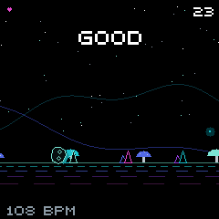

MYSTIC RUN
Rock runs on the beat. Hop the crystals as they come. Then blocks arrive with a button's name on them, and that button lights up on the panel: press it or run into the block.
- ANY KEY
- hop; higher keys hop higher
- THE LIT BUTTON
- clears its block
- KNOB 1
- the tempo